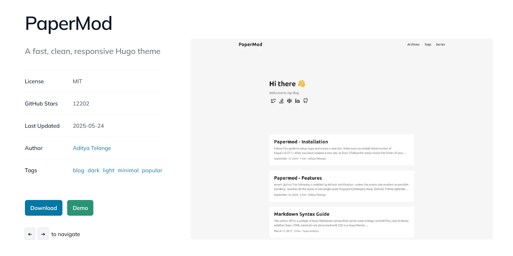

Week 01: Fab Academy Website Setup
Disclaimer: All the steps documented here were performed on Windows 11 Home 64 Bit. Some commands, paths, or behavior may differ on macOS, Linux, or other operating systems.
This week documents the process of setting up my personal Fab Academy website. It includes creating SSH keys, connecting to GitLab, cloning a Hugo template, installing Hugo and Go, and running the website locally.
Getting a SSH Key
To securely connect my computer to GitLab, I created an SSH key pair.
- Open PowerShell and run:
ssh-keygen -t ed25519 -C "YOUR EMAIL"
- You will be prompted for a file to save the key. Press Enter to accept the default:
C:\Users\YOURUSERNAME/.ssh/id_ed25519
- Enter a passphrase (optional), then confirm.
Example output:
Your identification has been saved in C:\Users\YOURUSERNAME/.ssh/id_ed25519
Your public key has been saved in C:\Users\YOURUSERNAME/.ssh/id_ed25519.pub
The key fingerprint is:
SHA256:eob5zKPyiAzqR75x/dyMzESHKMjkt6voyIzFVJaViTc YOUR EMAIL (YOUR SSH KEY WILL BE DIFFERENT)
- Add the key to the SSH agent:
ssh-add $env:USERPROFILE\.ssh\id_ed25519
Output example:
Identity added: C:\Users\YOURUSERNAME\.ssh\id_ed25519 (YOUR EMAIL)
Errors I encountered and solved:
-
Attempting eval $(ssh-agent -s) failed because eval is not recognized in PowerShell.
-
ssh-add initially failed with “Error connecting to agent: No such file or directory” until the SSH agent was correctly started in PowerShell.
- Copy the public key:
type $env:USERPROFILE\.ssh\id_ed25519.pub
- Add the key to GitLab:
Go to GitLab → Settings → SSH Keys. Paste the public key from the previous step. Click Add key.
- Test the connection:
ssh -T git@gitlab.com
Expected output:
Welcome to GitLab, @YOURUSERNAME!
Creating a Template Website:
After setting up SSH, I created a Hugo-based website using a template.
- Cloning the Template Repository:
git clone git@gitlab.com:HanFerik1/template-webiste-hugo.git
This created a folder at C:\Users\YOURUSERNAME\THE_FILE_YOU_ARE_RECORDING_AT.
We faced permission errors initially:
git@gitlab.com: Permission denied (publickey).
fatal: Could not read from remote repository.
These were resolved by correctly adding the SSH key to GitLab and verifying the connection.
- Installing Hugo and Go:
Check Hugo version:
hugo version
Check Go version:
go version
If Go is not installed, download it from https://golang.org/dl/ and ensure it is added to your system PATH.
- Preparing Hugo Modules:
Many Hugo templates use modules, which need to be downloaded:
cd C:\Users\kread\template-webiste-hugo
hugo mod tidy
hugo mod get -u
This downloads theme dependencies.
Errors we faced:
Hugo initially failed to build the site because Go was not installed:
binary with name "go" not found in PATH
After installing Go and adding it to PATH, the site built successfully.
- Running the Hugo Server:
hugo server -D
The -D flag includes draft content. The server runs at http://localhost:1313/hugo/. (MOST PROBABLY) The website auto-reloads on file changes.
Example output:
Web Server is available at http://localhost:1313/hugo/ (bind address 127.0.0.1)
Press Ctrl+C to stop
Some warnings appeared during build:
WARN deprecated: site config key services.twitter.disableInlineCSS was deprecated
WARN The "twitter" shortcode was deprecated
These warnings do not prevent the website from running.
Adding the Theme to the Website:
The Hugo template I used comes with a theme. I added an image for reference:

To ensure the theme works: Check the config.toml file. The theme should be set:
theme = "hugo-PaperMod"
-
Ensure the theme folder exists in themes/hugo-PaperMod.
-
Run
hugo server -D
You should now see the website styled with the template theme.
Website Structure:
I created the following structure for the site:
content/
├── _index.md → Homepage (About Me)
└── weekly/
├── _index.md → Weekly Assignments page
├── week01.md
├── week02.md
...
└── week20.md
Commands used:
mkdir content\weekly
hugo new _index.md
hugo new content\weekly/_index.md
hugo new content\weekly/week01.md
Repeat for weeks 02–20 as placeholders.
- Writing the Homepage:
content/_index.md example:
---
title: "About Me"
---
# Hi, I'm Han
Welcome to my Fab Academy site! This page is about me and my journey in digital fabrication.
- Weekly Assignments Page:
content/weekly/_index.md example:
---
title: "Weekly Assignments"
---
# Weekly Assignments
Click a week below to view its documentation:
- [Week 20](week20.md)
- [Week 19](week19.md)
- ...
- [Week 01](week01.md)
Summary of Week 01:
By the end of this week, I successfully:
-
Created an SSH key and connected it to GitLab.
-
Cloned a Hugo template repository.
-
Installed Hugo and Go, and configured modules.
-
Created the website folder structure (content/ and weekly/ pages).
-
Built and previewed the website locally.
-
Documented every step, including commands, outputs, warnings, and errors.